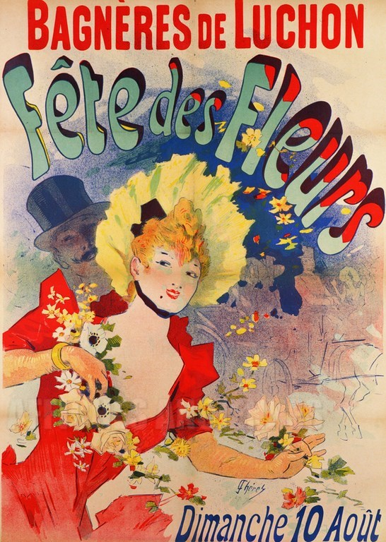

El festival de les flors de Luchon es celebra tots el mesos d'agost a la val d'Arán a França. Luchon es el primer poble que trobem al pasar la frontera cap a França per el port de el Portilló. La primera que hi vaig visitar-ho va ser per questio d'atzar ja que jo hi passava per allá en direcció al país Vasc Francés. Em va cridar molt la atenció que se celebrés un festival en el que les flors tenien un protagonisme especial aixi que de seguida que vaig poguer vaig recollir una mica més d'informació al respecte d'aquest festival. Us hi deixo un enllaç a la pagina Web que s'encarrega del programa cada any per tal de animar-vos'en a participar.
punxa aquíYago Urrutia
